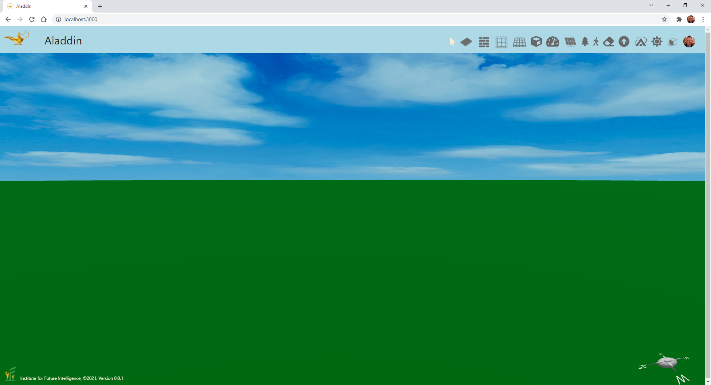
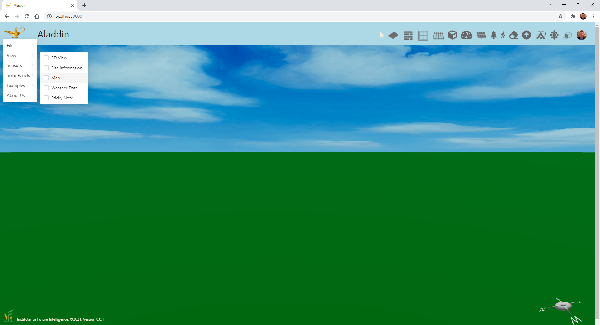
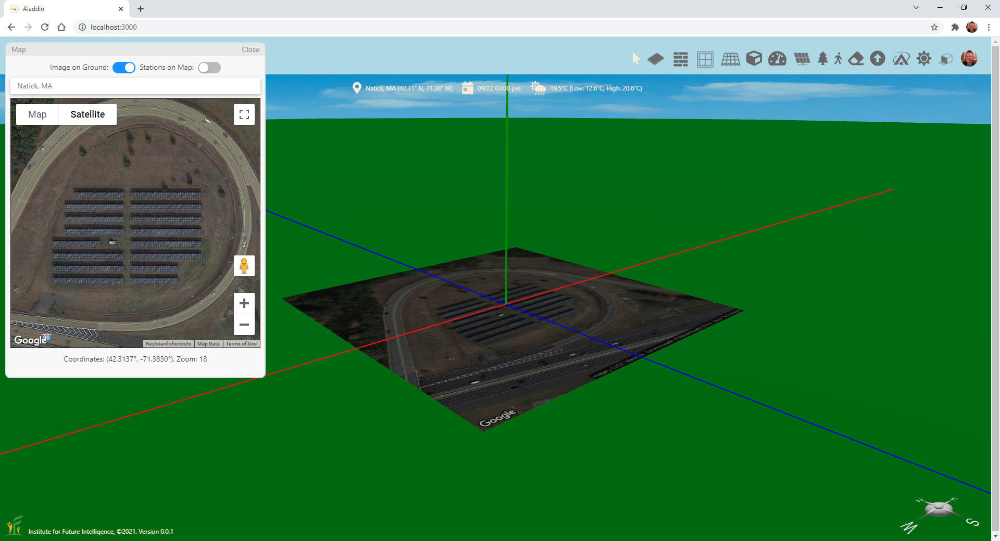
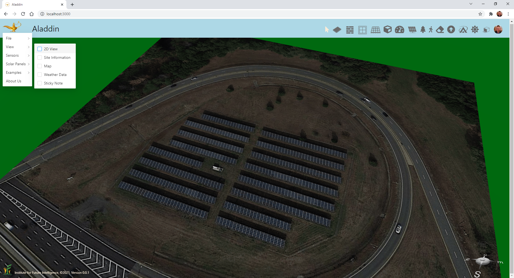
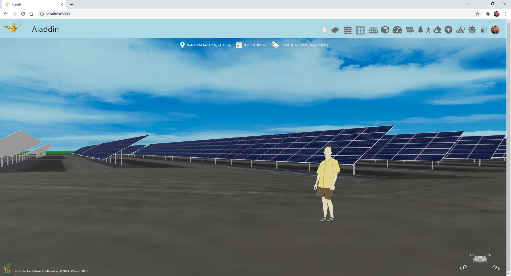
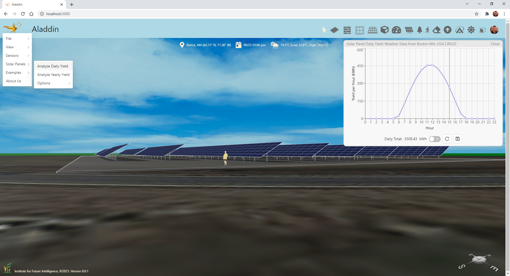

How to Model a Solar Farm in the Real World with Aladdin?
By Charles Xie ✉
Listen to a podcast about this article
Although still under active development with the goal to release the first beta version in early 2022, our Aladdin CAD software can already be used to model an existing solar farm in the real world and compare the simulation result with the actual output (if you happen to have its records of electricity generation) — all within a Web browser! If you are a teacher looking for engineering design challenges in the field of renewable energy for your students to do, Aladdin may be exactly what you need. In this blog post, we will walk you through how to do this kind of engineering modeling and simulation step by step.
Let's start with an empty scene in Aladdin. You can use the Eraser button on the toolbar at the top of the page to clear the scene if it is not empty.

An empty scene
Find an existing solar farm in Google Maps
The next step is to open the Map Window of Aladdin using the popup menu that can be invoked by clicking on the Magic Lamp image at the top-left corner of the page, as illustrated in the following screenshot:

Open the Map Window with the View submenu of the main menu
If you do not already have a solar farm to model in mind, you can browse your area in Google Maps to find a solar farm that interests you. Once you find one, you can copy and paste its latitude and longtitude to the Address Field above the map image in the Map Window of Aladdin and press Enter to load the respective map. Make sure that you select the Satellite view so that we can see the image of the existing solar panels. Zoom in the satellite image so that the solar farm looks as large as possible but is still fully shown in the image. Then select "Image on Ground." You should see that the satellite image is imported into the 3D scene to cover a portion of the ground. The image centers at the origin of the coordinate system.

Find a solar farm in the Map Window and lay its satellite image on the ground of the 3D scene
Switch to the 2D view
Although you can directly add and draw objects in 3D, Aladdin provides a 2D mode for you to do the job more easily. The 2D mode can be switched on using the "2D View" check box in the View submenu, shown as follows:

Switch to the 2D view for easier drawing
Add a foundation
In Aladdin, you cannot add a solar panel directly to the ground. You will need to add a foundation first. Click the Foundation button on the toolbar. Then click on the ground to drop a foundation. You can drag the handlers to resize it. The following animation shows how to create a foundation that covers the whole solar farm shown in the satellite image. Note that when an image is shown on the ground, the foundation becomes translucent so that you can still see what is beneath it. This is important as we need to see through the foundation so that we can draw solar panels on top of it to match the dimension and orientation of the existing arrays.

Add a foundation to cover all the solar panel arrays of the solar farm
Draw a solar panel array
Click the Solar Panel button on the toolbar. Then click on the foundation to add a solar panel. After that, you can resize it to create an array of solar panels that matches the array in the satellite image. You may need to change the orientation of the solar panels from portrait to landscape, as well as the type of the solar panel using the popup menu for the solar panel that can be invoked by right-clicking on it.

Add an array of solar panels and drag it to match an array in the satellite image
Change the tilt angle
Solar panels in a solar farm are often tilted to face the sun (unless the location is exactly on the equator line — latitude zero). To change the tilt angle, you can return to the 3D view. When you click on the solar panel array, you can see an arc appearing above it. Move the mouse over the arc and drag it to change the tilt angle. You can also change the tilt angle by typing the exact value in the corresponding field in the popup menu. Once you are done with the tilt angle, return to the 2D view.

Change the tilt angle
Copy and paste to create more solar panel arrays
After you create a single array of solar panels, you do not have to repeat the process all over again to add a new one. You can simply copy it and paste to anywhere on the foundation to add more using the right-click popup menu. If the dimension of a copied array is different than the one in the satellite image that you are modeling after, you can just resize it.

Copy and paste solar panel arrays
Analyze the output
Congratulations! You have now created a model of a solar farm in the real world. That was easy, wasn't it?

A completed model of a solar farm
Click HERE to view the completed model
The main reason that we create a model of a solar farm is to predict its electricity generation. Aladdin has a set of built-in physics-based simulation engines that allows users to easily analyze their models and designs without leaving the page or using any plug-in software. So the next step is to run a solar simulation to analyze the output of the solar farm. For example, you can run a daily yield analysis as shown below:

Perform a daily yield analysis of the solar farm output
You can also run a yearly yield analysis (which evidently takes much longer than a daily yield analysis):
Perform a yearly yield analysis of the solar farm output
Conclusion
We have shown you how to create a realistic 3D model of a solar farm and simulate its electricity generation within your browser. Note that, with Aladdin, you can experiment with many more design parameters and options. For example, without changing the layout of the solar farm, you can change the tilt angle to find out the value that may result in the hightest annual output. The integration with Google Maps also allows you to model any existing solar farm anywhere. These modeling and design capabilities make Aladdin an ideal platform for teaching and learning engineering design in the context of renewable energy.